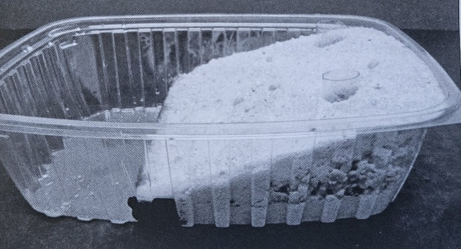

Section 2.6 Activity Three: Freshwater Storage and Aquifer Systems
A substantial portion of Earth’s freshwater is locked away in polar icecaps and glaciers, making it largely inaccessible for human use. Most of the remaining freshwater is stored underground as groundwater. Most terrestrial environments contain some level of groundwater, which resides in porous rock and soil layers.
In this activity, your group will construct a functional model of an aquifer—an underground reservoir that stores groundwater. Aquifers vary widely in size, depth, and water-holding capacity, and their characteristics influence water availability for ecosystems and human use. This hands-on model will help you visualize how groundwater is stored, moves through subsurface materials, and can be affected by natural and anthropogenic factors.
| Materials: | |
| Plastic Container | Clear Plastic Tube |
| Cup of Gravel | Cup of Fine Sand |
| Cup of Coarse Sand | 2.5 oz Cup |
| 10 oz Cup | 2 Clear Drinking Straws |
| Modeling Clay | Bellows Pipet |
| Permanent Marker | Knife |
| Scissors | Ruler |
| Water | |
-
Measure the length of the tray bottom in centimeters. Record this in your worksheet.
-
Locate one third of the total distance from the left side and make a mark with the permanent marker.
-
Make your modeling clay strip three-quarters of an inch high.
-
Create a retaining wall with your clay just behind the mark on the container. Mold the clay so that it fits tightly at the bottom and sides of the container. This wall will represent impermeable rock.
-
Label the bottom of the larger section of the plastic container “aquifer” and the smaller section “reservoir”.
-
Cut the clear plastic tube in half cleanly with a pair of scissors. These two cylinders will model wells drilled in the ground to reach the aquifer.
-
Add enough sand to just cover the bottom of the “aquifer”, behind the clay retaining wall. Make sure the sand is level.
-
Place the two plastic tubes upright in the sand in opposite corners. Place the remainder of the fine sand around the plastic tubes and behind the retaining wall. Level the sand.
-
Form the next level of the aquifer by adding the cup of gravel. Create an incline by adding gravel around the plastic tubes and then sloping the gravel downward until it is even with the retaining wall.
-
For the final layer, add just enough coarse sand to cover all the gravel. You may not need the entire cup of sand. This layer represents the topsoil and subsoil.

-
To represent precipitation, fill the 2.5-oz cup with water and slowly pour it onto the top of the slope, near the edge of the container and behind the wells. Repeat this process several times but be careful not to erode the terrain.
-
The smaller space beyond the clay wall represents a lake. Fill this with water until it rises a few centimeters over the modeling clay.
-
The top of the water table in the aquifer is represented by the height of water in each of the wells. Insert a straw down into one of the wells until you reach the bottom. Hold your finger tightly over the open end of the straw to create a seal, and then remove the straw from the well. Draw a line on the straw at the top of the water. This line represents the water level in the aquifer.
-
Using a bellows pipet, drain this we’ll be repeatedly filling the pipette and emptying it into the 10-oz cup
-
Immediately place the straw back into the well and remove a water sample as you did in step 13. Mark the top of the water. This represents the level of the water in the well after a period of high withdraw.
-
Wait a few minutes, and then observe what happens to the drained well. Measure the water level again and note if there is change.
-
Repeat steps 13 – 16 with the other well and a new drinking straw.